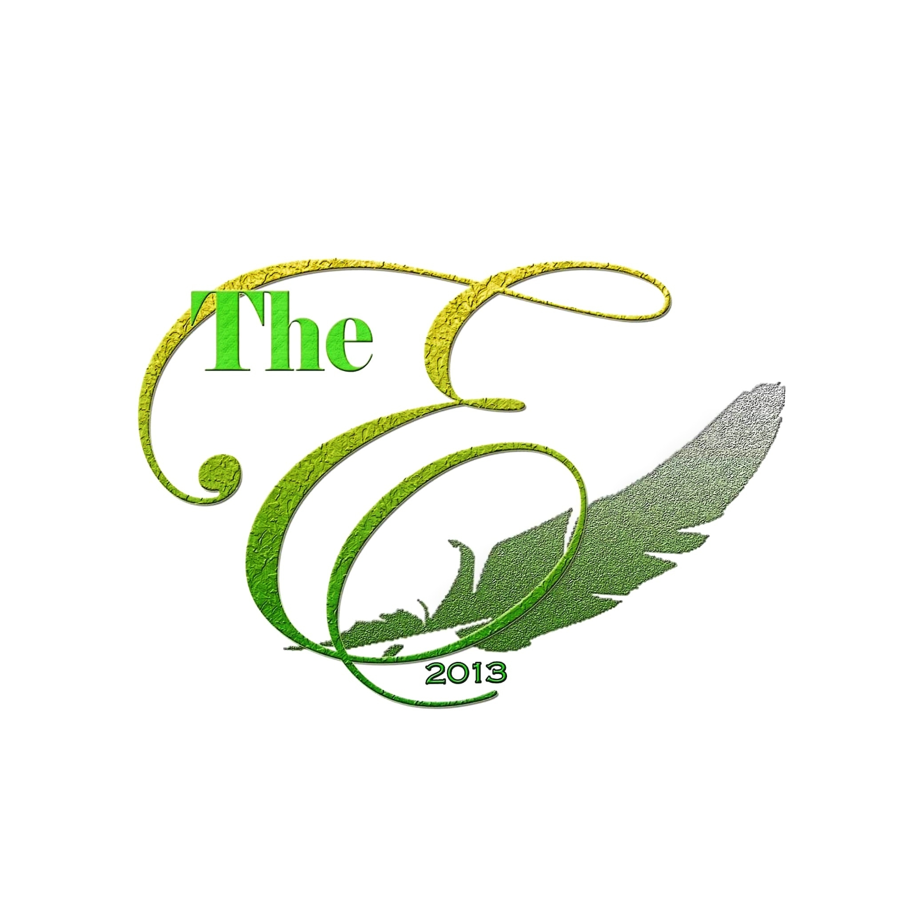
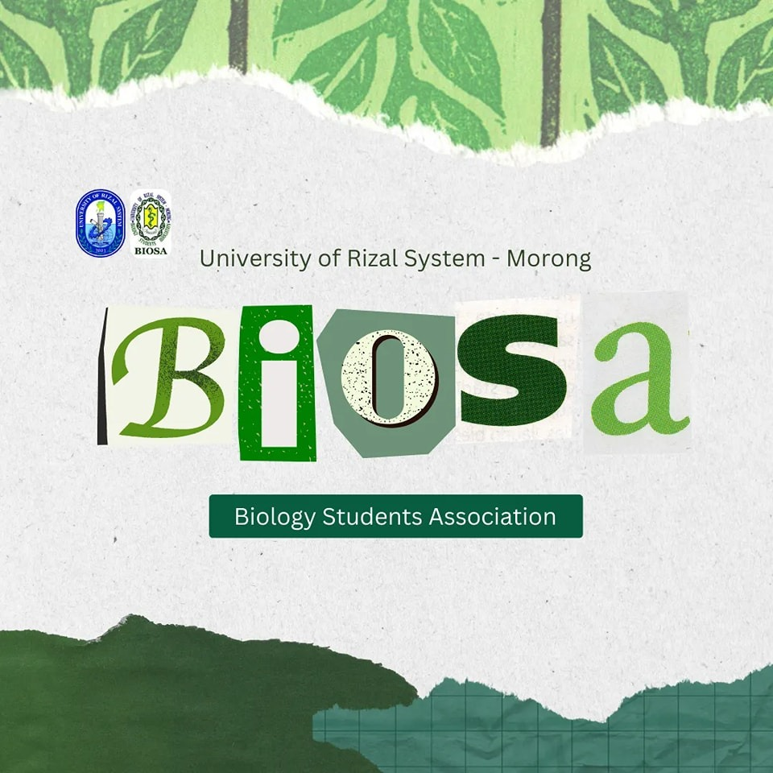
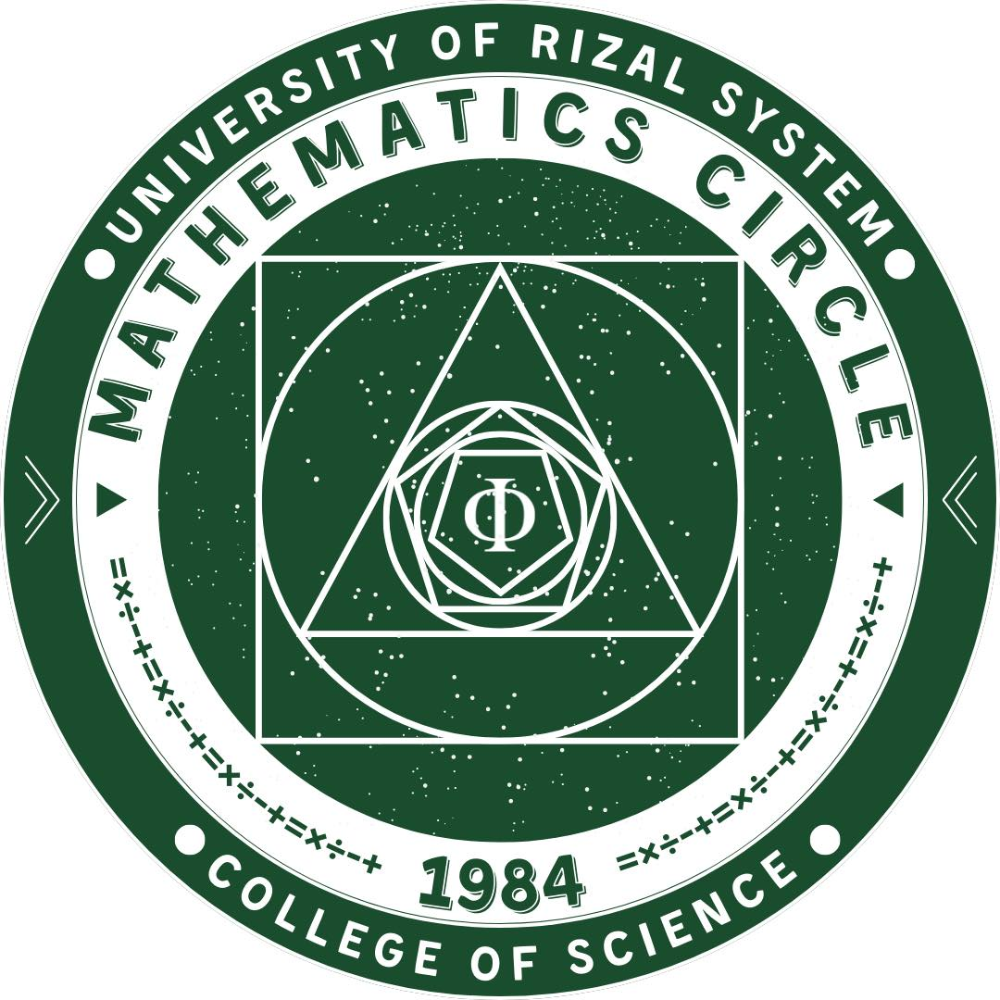
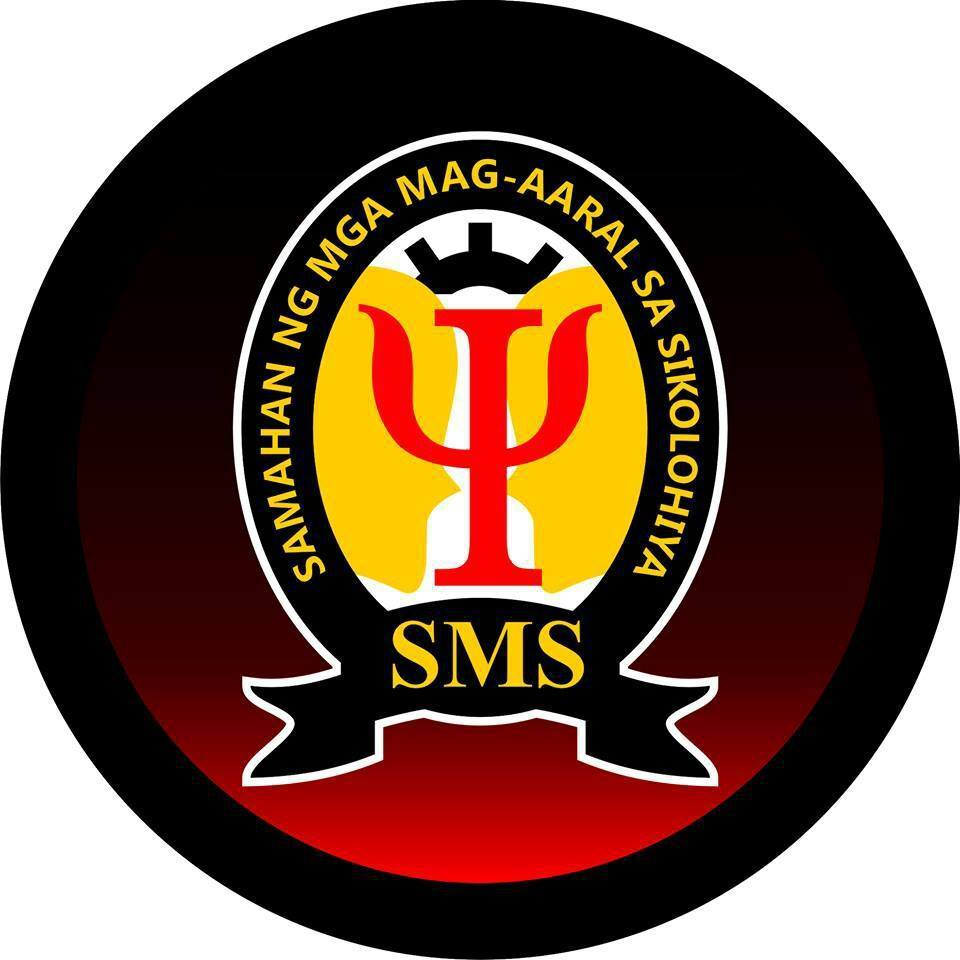
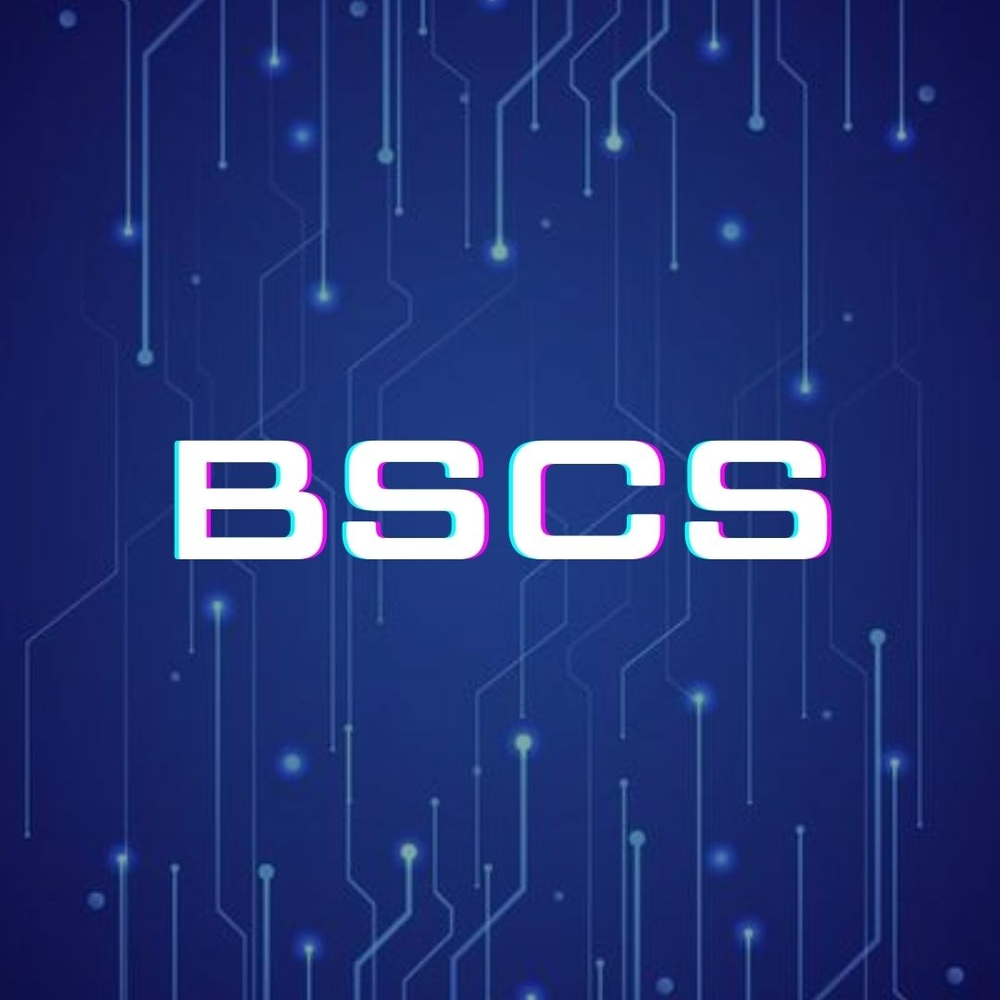

Activities
- Amendments and Ratification of Membership Contract Renewal
- Monthly Release of Newspaper
- Online Kumustahan
- Released 1st Semester Newspaper (at least few copies)
- Recruitment of New Members and Battery Test
- Preparation for Seminars and Trainings
- Released 2nd Semester Newspaper (at least few copies)
- Recruitment of New Members and Battery Test
Objectives
- To have specific time of validity of membership.
- To provide media platform accessible to students that happened in the Month
- This is to know the welfare of the publication members and assess the publication progress.
- To provide a media platform accessible to all students of COS to which it contain facts and current events happened in the stated Semester
- To ensure that the next batch would have the next heir to pass on the legacy of the 'Essence"
- Members as well as new recruits have to sharpen their skills through seminars and additional trainings
- To provide a media platform accessible to all students of COS to which it contain facts and current events happened in the stated Semester
- To ensure that the next batch would have the next heir to pass on the legacy of the 'Essence"

Activities
- Sciences Quiz Bee
- First Annual Meeting of Officers
- Webinar about Plants and Animals
- Organization Shirt, Laces, Pin etc.
- Science Trivia Quiz Bee
- Reconstruction of the Bulletin Board
- Thanksgiving
- Academic Tour
- Animal Zoo
- Botanical Garden
- National Museum of Anthropology
- Microorganism Museum
- Bio-Sport Fest
- COS week
- Biology Online Games Competition
- Biology Night
- Science camp and team building activities
Objectives
- To further enhance the competitiveness of Biology Students
- To discuss the different activities and delegate the organizations’ adviser and co-adviser
- To help students have a broad knowledge about plant and animal topics
- To have a biology uniform supplies for those students who want to have one.
- To further enhance the competitiveness of Biology Students
- To have a bulletin board for all biology students. This serves as a information resource of the students
- To have a recognition day for those who want to help and give their appreciation.
- To widen the understanding of biology students in their chosen field with the help of more engagement to places where they can utilize their knowledge.
- To strengthen the sportsmanship and teamwork of biology student
- To have a better sportsmanlike competition between different College of Science Programs.
- To help students assess their individual strengths and weaknesses on E-sports.
- To have a night for student to have fun and socialization with another co-bio students
- To further enhance the biology student’s knowledge and their social camaraderie

Activities
- Logo Making
- General Assembly
- Math-Talino E-Quiz Bee
- Math BINGO
- Math Jingle Making Contest
- Go Green/ Tree Planting
- Send off Love
- Rubiks Cube Competition
- Printing of Accomplishment Report and Financial Statement
Objectives
- To generate a new logo design for Mathematics Circle
- To express artistic skills of the student participants.
- To acknowledge and present past achievements of Math Circle.
- To introduce new sets of officers.
- To present the general plan of activities of the current Academic year.
- To aid and enhance student’s cognitive development.
- To enhance intellectual skills of the participating students.
- To prepare the participants in the future math contest outside the University.
- To make the students more familiarize on the mathematical terms and equations
- To promote new learning habits that may help the students.
- To express mathematical language that students will execute through jingle making.
- To express the different mathematical symbols through Jingle Making
- To promote clean and green environment.
- To collect and recycle the collected recyclable trash.
- To promote camaraderie among the different Academic Levels of BS – Mathematics
- To provide a fun yet memorable experience among the graduating students
- To help students apply their knowledge on different patterns and also reinforce the analytical and cognitive skills of the students.
- To have the record of the previous accomplishments that will serve as the reference for the new officers.

Activities
- Kaibigan, Kumusta Ka? (KKK)
- National Attention Deficit/Hyperac tivity Disorder (AD/HD) Awareness Week
- LGBT Community Week
- RISE UP: By the Youth, For the Youth
- SMS General Assembly
- Finding ME for Tomorrow
- Redesigning the SMS Logo and Cover Photo
- Kinaya Mo!
- Social Night: Semester Break Celebration
- SMS Year End Party
- Fresh Start 2nd Sem Welcoming Event
- Psychology Career Orientation
- Pen Me, Fill Me
- Valentine’s Day
- Paint the Pain Away
- Ginoo at Binibining Sikolohiya 2022
- COS Week
- SMS Concierge
- Jambayang Sikolohiya: A Digital Benefit Concert
- Outreach Program
- SMS SEMESTER PARTY
- Academic Recognition
Objectives
- To provide students a decamping experience away from the academic inclined sphere, a chance to connect with their peers and to build new connections by having virtual youth camp for psychology students.
- To provide knowledge and understanding on the highly misunderstood disorder.
- To promote safe space for members of LGBT community
- To urge Psychology students to speak about their worries.
- To inspire and promote optimistic thinking among Psychology students.
- To promote the information dissemination about the organization.
- To officially welcome the Freshmen and promote the Organization itself.
- To really know yourself more before you professionally study others in the future.
- To see what you can go through and experience in the future.
- To give not just Psychology students but also the entire students in the university a virtual pat on their shoulders.
- To develop social skills and relationship among Psychology students.
- For the students to celebrate after all the hard work in the semester.
- To let students feel more welcomed to the community — giving them the chance to furthermore unwind.
- To have a get together concert that will held via live at the end of the year and semester
- To officially welcome the students for the year 2023
- Inform the graduating students on possible career they might pursue;
- Prepare the psychology students emotionally and mentally on what challenges in life may experience after college; and,
- Enlighten the freshmen and sophomore on the opportunities on having psychology degree.
- To develop self-confidence of Psychology student and to further help them to grow as an individual.
- To paint what they considered as negative so that they can let it go and create something beautiful with the negative feelings they have.
- The works will be exhibited online with a title from the creator.
- To build camaraderie and enhance social skills of the students
- To assist and guide students with services such as grade concern assistance, mental health concern assistance, subject concern assistance and other concerns related to their program namely BS Psychology.
- To help the freshmen to seniors to meet and jam their heart out. All the talented and creative students can entertain other people. It can also be a way to produce a concert for a cause that will benefit a foundation that helps other people to overcome mental abuse, or mental illness.
- Tend to help people in need, especially in this situation where pandemic is existing.
- A celebration for everyone.
- To acknowledge the academic efforts of the students

Activities
- Teachers’ Day Celebration
- Webinar on Programmingk
- National Mental Health Week
- RCS E-Triathlon (Wildrift, Valorant, Mobile Legends, COD Mobile)
- ComSci Quiz Bee
- Speed typing contest
- Digital Poster Making Contest
- FacetoFace: Programming Workshop
- ValentinesCelebration: Anonymous Confessions
- COS Week
- CS Acquaintance Party
Objectives
- To give recognition to the professors who worked hard to teach their students
- To educate students on programming and its languages
- To give recognition and awareness regarding the student’s mental health
- To give students a chance to enjoy the games they like to play with fellow students
- To test the student’s knowledge on the field of Computer Science
- To showcase the student’s skills and knowledge on typing
- To encourage students to show their talents to create an art using Gadgets
- To have extra knowledge about programming Languages such as C#, C++, HTML/CSS, Java, Javascript, Python, and other programming language
- To give the CS students a chance to celebrate valentines by writing their confessions in a paper and sending it anonymously
- To develop friendship and camaraderie between College of Science students
- To celebrate the end of academic year of student in Computer Science